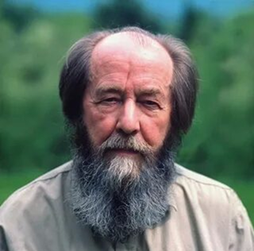

Фото
Кто такой Александр Солженицын?
Александр Исаевич Солженицын (1918–2008) — русский писатель, драматург, поэт, публицист, общественный деятель, лауреат Нобелевской премии по литературе (1970).
Его произведения, такие как «Один день Ивана Денисовича», «Архипелаг ГУЛАГ» и «Раковый корпус», открыли миру правду о сталинских репрессиях и лагерной системе Советского Союза. Солженицын стал символом борьбы за правду и свободу слова.
Видео о писателе
Александр Солженицын - краткая биография
Интересные факты из жизни Александра Исаевича
Ключевые годы жизни
1918
Рождение в Кисловодске
1945
Арест и лагеря
1962
«Первое опубликованное произведение»
1970
Нобелевская премия
1974
Высылка из СССР
2008
Уход из жизни
Что вы найдёте на этом сайте
Подробная хронология жизни, таблица событий, фотографии.
Список произведений по жанрам, аннотации, отзывы.
Фотографии писателя в разные годы жизни.
Ссылки на полные тексты произведений и дополнительные материалы.